melonJS games and demos
you'll find here below some links to games and demos using melonJS. If you want to share you work with the library, I will be very happy to add it to the below list
WWW by Alexandre Dantas
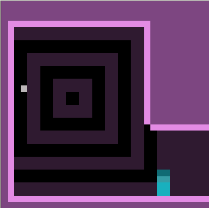WWW is a low-resolution (32x32) HTML5 clone of the famous VVVVVV game ! It's an open-source 2D HTML5 platformer, made with melonJS and created for the 2014 Low Resolution GameJam (#lowrezjam 2014).
Visit Developer's Website here
Play it here, or click here for source code on the Github page !
Hairland by Dadalab
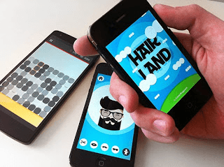Hairland is the first of a serie of "minigame" packs sponsored by a hairdressing company near Barcelona (though the game is by no means a game about cutting hair). Hairland is a free game, developed both using melonJS and CocoonJS for deployment on both the appStore and Google Play ! (see links below)
Visit Developer's Website here

Clumsy Bird by Ellison Leao
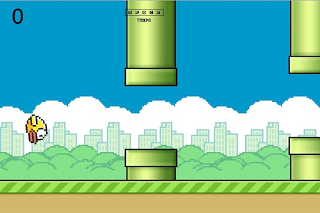Clumsy Bird is a clone of the now world famous Flappy Bird, and created in only two days for studying purposes. As the hype-ness on the Flappy Bird theme was growing, its author decided to host the code on Github, to give more visibility about how its easy to implement such a game.
"Clumsy Bird is the new open source Flappy Bird" (ComputerWeekly.com, Feb 2014)Play it here, or click here for more details on the Github page !
Psiral by @petarov
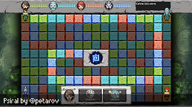
One of the winning entry from the last GitHub Game-Off 2013 challenge !
Psiral is a turn based strategy game in which four wizards battle to reach the fountain of endless energy. This, of course, will bring them eternity and power beyond human imagination.
Each wizard controls the powers of one of the four known elements - earth, water, fire and wood... uhm, I mean air. So, which one will get there first? Choose and find out.
Play it here, or click here for more details on the Github page !
Master Spy by TurboGun
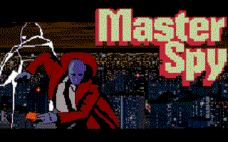
Master Spy is a stealth-based precision platformer with old school cutscenes, slated for release in 2014.
Features :
- 50 levels across 5 unique environments, with each mission increasing in thumb-shredding difficulty.
- Cinematic Pixel Art Cutscenes full of Action, Conspiracy, Betrayal, and Intrigue. You could skip these, but why?
- Original Spy-Fi Soundtrack by Sferro!
Check out the main web site for more details, or click here to help them get on Steam !
Node Mayhen a Node Knockout hackathon entry
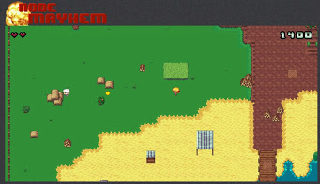
A tiny shooter made with melon.js that features multiplayer support powered by Node.js and Socket.io.
Built over one weekend by Helen Zeng, Timothy Strimple & Felix Rieseberg, as an easy and fun shooter for Node Knockout 2013.
Check out their blog entry for more details, or GitHub, as the whole package is open source, and build your own multiplayer browser game!
Tilly's Horrible Halloween by Gareth Williams

An Halloween themed platformer entry for the 1GAM October challenge, which takes inspiration from the original Great Giana Sisters game. The main character is Tilly, who makes the leap from the Dreamland RPG to become an arcade platforming heroine. The idea is to collect candy and beat up the denizens that also emerged from the world of Dreamland.
Click here to play, here to have a look at the source code, or here for more details on the corresponding blog entry.
Learning Adventure by ITSimples Games
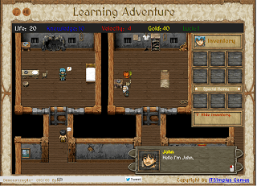A RPG (Role Playing Game) with very unique educational RPG feature, where to achieve objectives, the player has to spend several challenges such as answering questions or solving problems.
Click here to play, the demo source code is also available here.
Rise of the monsters by Michael Luyties
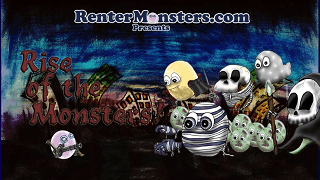A preview version of a fun and exciting new game : "Rise of the monsters"
Play the demo at www.rentermonsters.com , and check their facebook page for more information !.
Sprung Fever by blipjoy
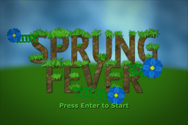Struggle through the life of a young man who suffers from spring fever. Everywhere he goes, the boy can't help himself around girls. He is very impressionable and easily attracted by the young women. Help the young man in the fight for his life as he goes on exciting adventures to the grocery store, the mailbox, and returning rental videos! Just don't let him get sidetracked by cute girls, or he'll fail his exams. The cuter they are, the worse is gets!.
Sprung Fever was built in three weeks for One Game A Month April 2013. Click here to play, or see the author blog entry for more details.
Mini Sim Hotel by Jason Oster
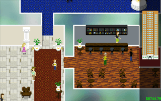hotel management simulation game where the player builds a hotel from designing the floor plan to hiring staff and fulfilling customer satisfaction. Start with a limited budget as you grow your hotel, keeping a watchful eye on your finances. See to customer needs by directing staff to take care of complaints; a happy guest is a guest that will stay again, increasing your overall revenue. This game presents a tricky and addictive balance between creativity and resource management.
Mini Sim Hotel has been built for the Radisson Hackathon 2013. Won first prize. Click here for the online demo, or see the author blog entry for more details.
Hammers, swords & Steel by FightTime.net
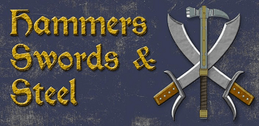HSS is the first MMO RT TBS (Real Time Turn Based Strategy) game. Like a lot of TBS games, the goal is to conquer the world. This game could be considered as a mix of Travian and Civilization.
Alienauts by blipjoy

Play as a stranded alien survivor, attempting to outsmart the lab coats as they keep a keen watch on your every move. The scientists studying you are most interested in your escape pod's ability to create a temporary but exact replica of certain materials.
Alienauts is a HTML5 A 2D physics puzzle-adventure.game made for the Github Game-off 2012. Click here to play, or see the Github Repository for more details and source code.
Simpleman by Justin Oblak
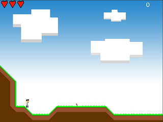A simple 5 level platformer, featuring a sprite composition engine based off of Jason Oster's Neverwell Moor !
Click here to play, or check the source code here on Github.
Invasion by Robin Rateau

A game in which you drive a spaceship and where you must destroy all incoming aliens !
Note : this game does not use Tiled and shows how easy it can be to create simple games with melonJS.
Click here to play, or check the source code here on Github.
Guinea Pig Guinea Pig - a GGJ 2013 entry
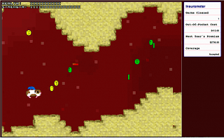A Global Game Jam 2013 entry that won the first prize in the open web category.
Guide your guinea pig through a cholesterol clogged artery, while weakening and collecting germs to develop a delicious vaccine. Take note of your insurance rate.
Click here to play, or check the GGJ page and source code here
Beyond the horizon by Jamie Gault

Beyond the Horizon is a HTML5 game made as the January game for 1GAM.
Click here to play.
Shooter - a GGJ 2013 entry
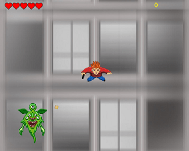A "comic" style shooter developed as part of the Global Game Jam 2013, by Aaron McLeod , Anthony Wong , Evan Doherty & Tyler Akey.
Click here to play.
Breakouts by Matt Greer

As part of a project managed by Matt Greer and aiming to get some insight into the various engines out there, by implementing a simple version of the game Breakout in various engines.
Click here to play the melonJS version, or check the source code here on Github.
the BRINK by team RADMARS
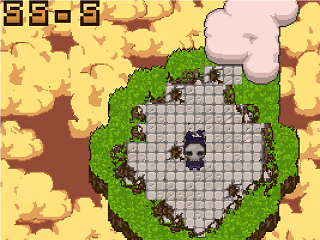A Great Jam Entry for the Lundum Dare 25, where you are the villain !
Click here to play, or check the source code here on Github.
I AM EAGLE by Jamie Gault
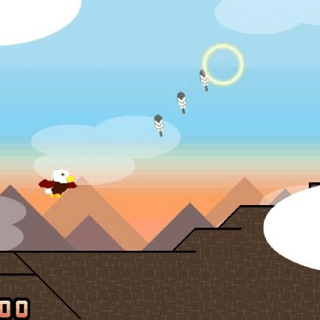I AM EAGLE is a free 2-D touch-based platformer game for Windows 8 (available on the Windows Store).
Point where you want Eagle to fly. When pointed down, Eagle goes into a dive that helps him speed through levels and attack enemies. Collect feathers and try to get to the end of the level as fast as possible for a high score. The initial release has 15 levels across 3 worlds, and future updates will add more levels..

Vibrant Recycling by Cian Games

Vibrant Recycling is an educational arcade game for HTML5 compatible browsers where the player will help fun bins to collect and recycle the wastes.
Click here to play online.

Neverwell Moor by Jason Oster
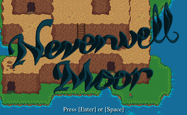Built in 3 weeks for the Liberated Pixel Cup 2012 competition with JavaScript (HTML5) using melonJS and Chipmunk-js.
Click here to play, or check the source code here from the Project homepage.
Death Death Evolution by team RADMARS
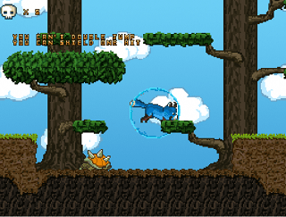The Third place entry in LD24 is yet another great title and has been created by Adhesion.
Death Death Evolution is firstly a great name along with being a very interesting spin on the puzzle platformer genre as a whole.
Generally death is bad in any game, however in Death Death Evolution it is somewhat encouraged.
Click here to play, or check the source code here on Github.
Human Fatality by Quantum Softwares

A Jam entry for the Lundum Dare 24 !
From the prehistory to the modern era : Human Fatality is a game which is a "double travel" : A travel inside the human history and, in parallel, inside the video game history.
Click here to play, or get the source code here.
CommandoJS by the Commando team !

CommandoJS is a study on HTML5 canvas and audio capabilities implemented using CoffeeScript. It is also a nostalgic glimpse in the past in a form of Commodore 64 game "Commando".
Click here to play, or check the source code here on Github.
Escape from Minimars by team RADMARS

A Great Jam Entry for the Lundum Dare 23.
Click here to play, or check the source code here on Github.
Exolon by newagebegins
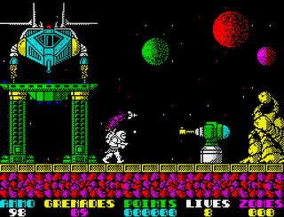A Remake of the ZX Spectrum game (published in 1987) made with melonJS, and featuring 75 of the orginal screens screens.
Click here to play, or check the source code here on Github.
Cachania by Christian N.
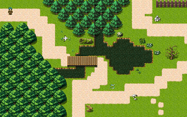A game made for the world wide scavenger hunt "Geocaching", where you have to search treasures in the game to find the lost parts of the coordinates for the real world cache.
Click here to play.
Action Reflex by newagebegins

A clone of the 1986 ZX Spectrum game made with melonJS.
Click here to play, or check the source code here on Github.
Tiny Neutrino by Allusion
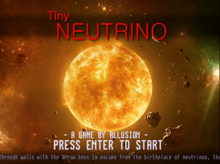A 48 Hour Compo Entry for the Ludum Dare 23
Click here to play, or get the source code here.
Zap IT by LSU
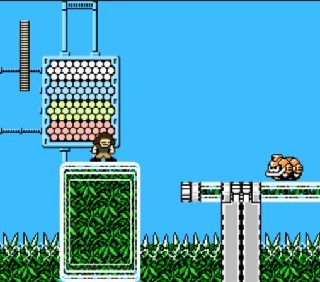A megaman style platformer game dedicated to a former co-worker at LSU, Adam Zapletal.
Click here to play.
More information about the game here
Electro Tank by Allusion

A game inspired by an old Apple II game called Bolo, where you have to destroy enemy bases in each level.
Click here to play.
Bitzz by Tiago Almeida
Chaos is an evil virus that infected Bitzz. You must be fast and help Bitzz escaping, reaching the portal, in the less time possible! What are you waiting for? Go!
Bitzz was built with HTML5 and Javascript using MelonJS, and scoreoid for Global Scores, Best Scores and Player Management.
Click here to try it out, click here for more details fron the scoreiod webpage, or check the source code here on Github.!
Alex the Allegator 4 - web edition

a HTML5 remake of the classic "alex the allegator 4" game, available here and created by Johan Peitz from Free Lunch Design.
Although featuring only the 6 first original levels, it reproduces almost all of the original game mechanisms, and uses mostly all the features available in melonJS !
Click here to try it out, or check the source code here on Github.!
Fish War !
 A simple game where the goal is too eat as much fish as you can, while
avoiding the jellyfish.
A simple game where the goal is too eat as much fish as you can, while
avoiding the jellyfish.
Click here to play.
How much can you eat ?
Frangoi's Journey by Ellison Leão
A game prototype for the 2012's Global Game Jam , made using the melonJS.
Frangoi is an old Alchemist who wishes to find the secret formula of a potion that can give the immortality. He can travel between 2 parallel words in order to find the elements for the immortallity potion.
You can play the game from the project home page here and as well follow the project evolution on github.
Top Wing
 An example of vertical Shooter by Michael Jasper.
An example of vertical Shooter by Michael Jasper.
Visit his page here to play it !
demo page includes useful links to game source code
Chronicles of Link
 A very nice WIP zelda remake/clone by Anthony Dietrich.
A very nice WIP zelda remake/clone by Anthony Dietrich.
You can visit his page here to check it out, and/or for more information about the game progress and
status.
TMW.js by Thorbjørn Lindeijer
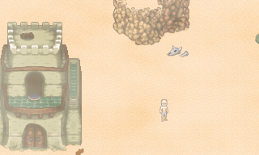 An experimental client/server HTML5 remake of The Mana World, by Thorbjørn Lindeijer, the author of Tiled.
Please see the following link to the Tiled homepage for further details, or Click here to see it running.
The project is also published in a git repository at github, here.
Thank you Bjørn !
Note: The following demos have been actually used during melonJS development, to test and validate the engine. They are very limited and only use some particular features, so don't expect anything polished here!
a Whack-a-Mole demo
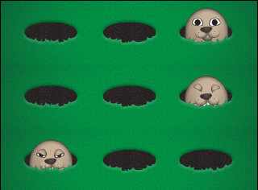A simple but yet unoptimized whack-a-mole game demo, freely based on the Cocos2d Whack-a-mole tutorial version by Ray Wenderlich.
Demo is available online here.
Or you can also check here for the corresponding source code.
melonJS Tutorial
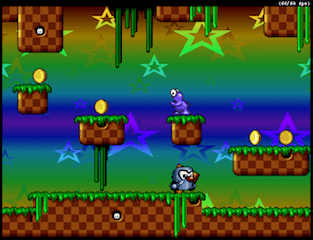A simple platformer demo, designed during the creation of the melonJS step by step game creation tutorial :
Demo is available online here.
Or you can also check here for the Tutorial itself.
Plateformer demo

a simple platformer to demonstrate the loading of tiled map using melonJS
demo is available through the download package
the whole level have been designed using only tiled, as shown on the below picture.
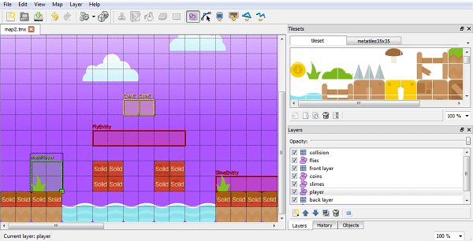